ADVANCE COLLECTION
O Castlevania Advance Collection traz de volta os jogos da série reproduzidos na década de 90 para o Game Boy Advance™, que compila os seguintes títulos: Castlevania: Circle of the Moon, Castlevania: Harmony of Dissonance e Castlevania: Aria of Sorrow.
Além desses, a Konami também anunciou um bônus, trazendo o Castlevania: Dracula X, lançado em 1995 pela plataforma SNES.
Lançado em 1995 para o SNES, este título apresenta o enredo de Rondo of Blood (previamente lançado para PC Engine em 1993), entretanto com fases redesenhadas, duas de quatro rotas alternativas removidas e um estilo visual diferente. Foi também o último jogo da série Castlevania a ser lançado para o SNES.
O jogo se passa na Transilvânia Medieval e é protagonizado por Richter Belmont, que tem a missão de resgatar Anette (sua namorada) e sua irmã, Maria, aprisionadas por Drácula.
Lançado em 2001 para o Game Boy Advance™, Circle of the Moon foi o primeiro jogo da franquia para este console. Apesar de ter recebido críticas na época, o jogo foi aclamado pelo público, sendo listado entre os melhores jogos de GBA e ultrapassando a marca de mais de 500 mil cópias vendidas
O objetivo do protagonista, Nathan Graves, é invadir o castelo infestado de monstros em busca de seu mentor, que foi sequestrado. Além disso, o jogo conta com um sistema de cartas mágicas, que, quando combinadas, produzem um efeito mágico.
Harmony of Dissonance foi o segundo título da série lançado para o Game Boy Advance™, sendo publicado em 2002. Produzido com a intenção de criar um jogo parecido com o aclamado Symphony of the Night do Playstation™, o título vendeu 126 mil unidades nos EUA e não foi um sucesso no Japão
O objetivo do jogo é levar o protagonista, Juste Belmont, através do castelo infestado de monstros enquanto ele busca por uma amiga sequestrada.
Considerado por muitos o melhor título da franquia, foi lançado em 2003. O jogo introduz várias novidades à série, como o sistema "Tactical Soul" e uma história cuja época é futurística, em contraste a época dos vários outros jogos da série.
A época em que o jogo se ambienta é no ano 2035, onde o Conde Dracula estava morto, tendo seus poderes herdados pela sua reencarnação. A história se foca nas aventuras de Soma Cruz, um estudante que recebe estranhos poderes devido à morte do Dracula, e a sua batalha contra aqueles que querem adquirir tais poderes.